Το ταξίδι
Ξεκίνησα το Σάββατο το πρωί, 13 Ιουνίου. Έφτασα πρώτα στον σταθμό του τρένου στο Άξμινστερ, και από εκεί πήρα το λεωφορείο (το Χ51 εκτελούσε δρομολόγια εκείνη την ώρα, πάντως υπάρχουν και άλλα). Γύρω στις έντεκα παρά ήμουν στο Λάιμ Ρέγκις. Το φεστιβάλ είχε ήδη ξεκινήσει και θα τελείωνε το απόγευμα της επομένης.
Στην παραλία
Κατεβαίνοντας από το λεωφορείο ξεκίνησα ολοταχώς, «με το κεφάλι», να ψάχνω για απολιθώματα. Το φεστιβάλ ήταν μεγάλο γεγονός, όμως εκείνη την ώρα ήταν ακόμα νωρίς και μόλις ξεκινούσαν, και το πιο σημαντικό: είχε άμπωτη στις έντεκα. Ο καιρός ευτυχώς ήταν ωραίος, και λίγο ζεστός μάλιστα.
Περπατούσα πάνω-κάτω στην παραλία για δυόμισι ώρες. Μου έκανε μεγάλη εντύπωση πόσα απολιθώματα αμμωνιτών υπήρχαν, και μεγάλα μάλιστα, όχι αστεία. Μερικά από αυτά θα είχαν σίγουρα διάμετρο πενήντα πόντους. Έπρεπε άλλωστε να το περιμένω, αφού στο Λάιμ Ρέγκις βρίσκεται ο περίφημος «πεζόδρομος με τους αμμωνίτες» («ammonite pavement» στα αγγλικά), μια πλάκα πάνω στην παραλία που είναι κυριολεκτικά γεμάτη μεγάλους αμμωνίτες, και ο κόσμος περπατά κανονικά και τους πατά.
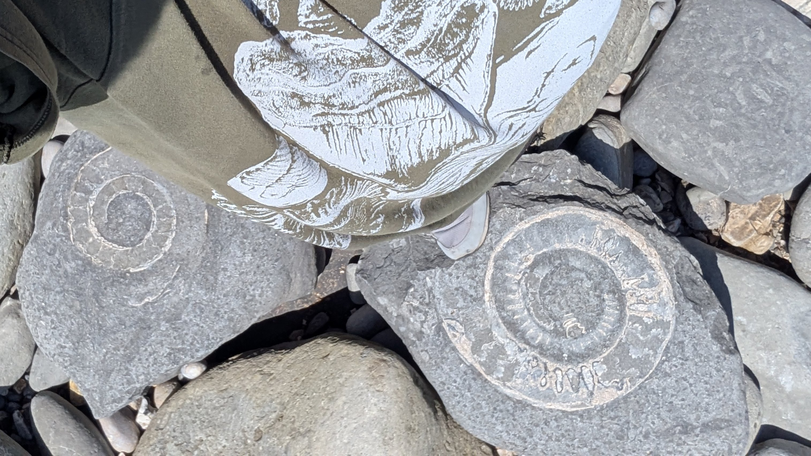
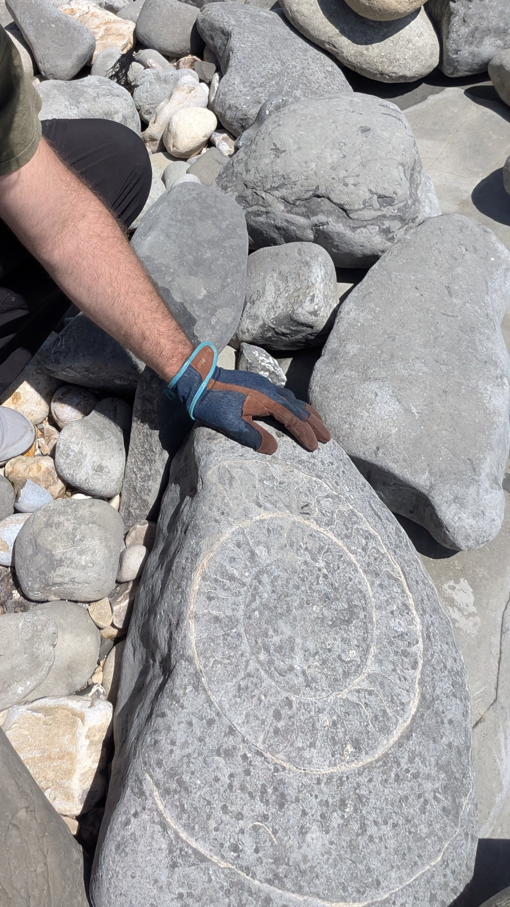
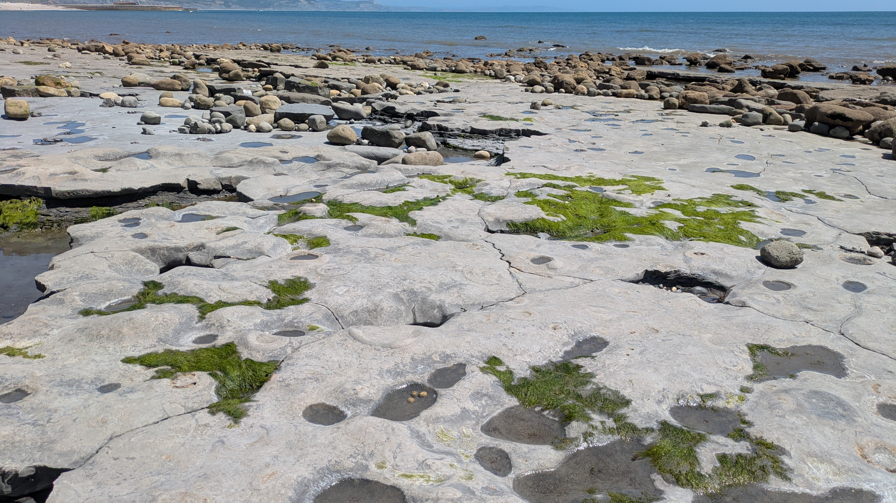
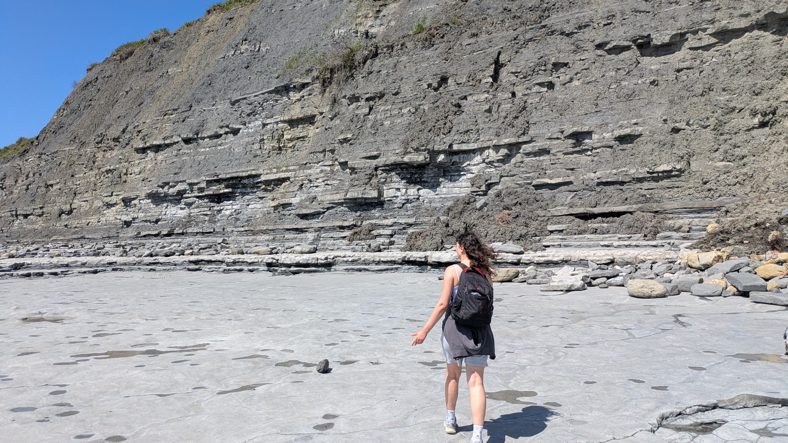
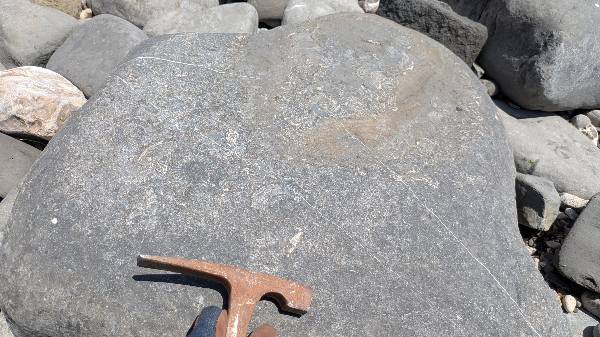
Είχα στον νου μου να βρω αμμωνίτη, αφού μέχρι τώρα δεν είχα ιδιαίτερα καλούς από εκείνη την περιοχή μέσα στη συλλογή. Όμως το πρώτο μου εύρημα, μέσα σε μια λακκούβα κάτω στην άμπωτη, ήταν ένα κομματάκι από στέλεχος κρινοειδούς, αστερόσχημο, το πρώτο τέτοιο που μπαίνει στη συλλογή μου. Μια υπενθύμιση πως η απολιθωματοθηρία είναι κάτι απρόβλεπτο και συναρπαστικό!
Τέλος πάντων, ύστερα από αρκετή ώρα βρήκα έναν μεγάλο βράχο που φαινόταν να είχε πρόσφατα γλιστρήσει από τους γκρεμούς. Σημειωτέον ότι οι γκρεμοί, εκτός από το ότι απαγορεύεται να σκάβεις, είναι και επικίνδυνο να τους πλησιάζεις, καθώς ανά πάσα στιγμή μπορεί να γίνει κατολίσθηση. Πάνω σε αυτόν τον βράχο λοιπόν άρχισα να χτυπώ λίγο την άκρη με το σφυρί μου, ώσπου έπεσε χάμω ένα κομμάτι από την πέτρα. Και ευθύς αμέσως είδαν τα μάτια μου εκείνο που περίμεναν να δουν: έναν όμορφο, ολόκληρο αμμωνίτη διατηρημένο μέσα στον βράχο. Σιγά-σιγά με το σφυρί τον έβγαλα από τον βράχο και γύρω του αποκαλύφθηκαν κι άλλοι. Αφού μάζεψα πεντέξι, τους φωτογράφισα (μήπως και πάθαιναν κανένα κακό στην πορεία) και τους έβαλα μέσα στην τσάντα μου. Έπρεπε να είχα φέρει καμιά εφημερίδα να τους τυλίξω, αλλά την πάτησα.
Κατά το μεσημέρι είπα να παρατήσω τα απολιθώματα, αφενός γιατί έκανε ζέστη και κουράστηκα, αφετέρου γιατί είχα βρει αρκετά κι έπρεπε και να τα κουβαλάω όλη μέρα μαζί μου, και επίσης γιατί υπήρχε κι ένα φεστιβάλ που είχα έρθει να δω.
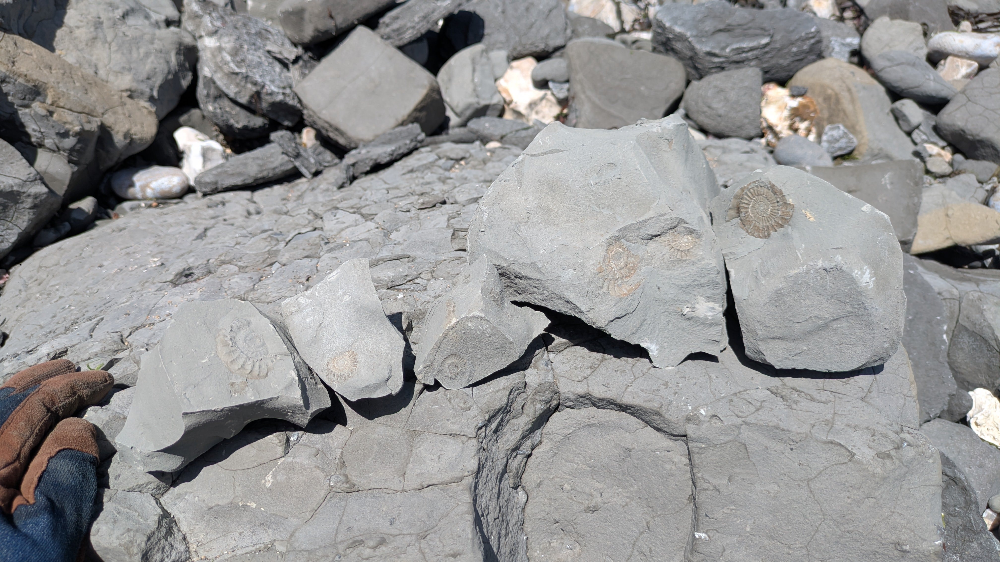
Το φεστιβάλ (Ημέρα πρώτη)
Μπαίνοντας πίσω στην πόλη είδα πως είχε μαζευτεί κόσμος. Πολλοί ήταν στην παραλία και απολάμβαναν τον καλό καιρό. Ήρθαν από όλη την Αγγλία συλλέκτες, καλλιτέχνες, εταιρείες και ειδικοί, κι έστησαν τραπέζια και ο καθένας εξέθετε τα δικά του.
Γυάλισμα
Πήγα πρώτα σε ένα εργαστήρι γυαλίσματος απολιθωμάτων. Είχα πάρει και κάποιους δικούς μου βελεμνίτες, αλλά μου είπαν πως δεν θα έκαναν, ίσως ήταν σκληρή η πέτρα, δεν ξέρω. Αγοράσαμε εκεί έναν αμμωνίτη κι έναν ναυτίλο κομμένους στη μέση. Μας είπαν πως ήταν από το Ίλμινστερ. Τους τρίψαμε πρώτα σε τρεις βαθμίδες βρεγμένου γυαλόχαρτου, ξεκινώντας από το αδρό και τελευταίο ήταν το πιο ψιλό. Στο τέλος μας το τελείωσαν με διαβρωτική σκόνη πάνω σε ένα μηχάνημα κάποιοι εθελοντές που ήταν εκεί. Το τελικό αποτέλεσμα ήταν μια λεία και όμορφη γυαλιστερή επιφάνεια, που αναδεικνύει τους θαλάμους αέρα του κελύφους και άλλες λεπτομέρειες της εσωτερικής δομής. Αν και νομίζω πως στην περίπτωση του αμμωνίτη το γυάλισμα έφαγε περισσότερα παρά αποκάλυψε κάτι που δεν φαινόταν.
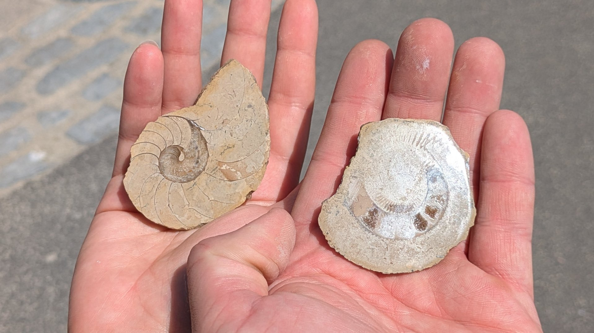
Ομιλία: «Καθαρισμός και συντήρηση απολιθωμάτων»
Μετά από αυτό υπήρξε μια ομιλία σχετικά με τη συντήρηση απολιθωμάτων, από εκπροσώπους της ZOIC PalaeoTech και της «Emanya fossil preparation & conservation». Μίλησαν για τις διάφορες μεθόδους καθαρισμού και συντήρησης:
- μηχανικές μέθοδοι
- με πένες χάραξης ηλεκτρικές ή αέρα (με κομπρεσέρ)
- με μικρά σκαρπέλα
- με αμμοβολή, με τη χρήση διαφόρων κόκκων αναλόγως της σκληρότητας του απολιθώματος και του πετρώματος
- χημικές μέθοδοι
- συντήρηση με Παραλοειδές Β-72 (στο σχετικό άρθρο στο ημερολόγιο, το παραλοειδές που χρησιμοποίησα ήταν αυτό που είχα αγοράσει από τη ZOIC)
Αναφέρθηκαν και στη «νόσο του πυρίτη» (pyrite disease), που καταστρέφει τα πυριτικά απολιθώματα. Είναι μια χημική αντίδραση που συμβαίνει όταν ο πυρίτης συναντά την ατμόσφαιρα (το οξυγόνο αν θυμάμαι καλά;) και οι συνθήκες υγρασίας είναι ψηλές. Ο καλύτερος τρόπος να αποφευχθεί αυτό, απ' ό,τι είπαν, είναι να αφήνεις τα απολιθώματα να στεγνώσουν εντελώς (πιθανώς για μήνες ή και παραπάνω) πριν φυλαχτούν.
Η Emanya μας έδειξε κι ένα ψάρι του Δεβονίου που είχε σχεδόν τελειώσει. Ήταν πολύ όμορφο αλλά δυστυχώς δεν το φωτογράφισα. Είπε πως του πήρε 108 ώρες δουλειάς να το καθαρίσει στην κατάσταση που ήταν.
Φαγητό και ξεκούραση
Μετά από αυτό πήγαμε και φάγαμε στο Rock Point Inn. Τα θαλασσινά τους ήταν πολύ ωραία, και είχα και την έγνοια των γλάρων μήπως μας κάνουν καμιά καταδρομική! Χαζέψαμε λίγο ακόμα και στο τέλος πήραμε το λεωφορείο για να γυρίσουμε στο Τσάρμουθ, εκεί που θα μέναμε. Πήγαμε και μια βόλτα το βραδάκι στην παραλία του Τσάρμουθ, αλλά δεν βρήκα τίποτα εκεί.
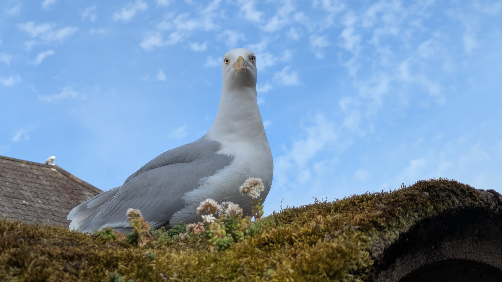
Το φεστιβάλ (Ημέρα δεύτερη)
Πήγαμε νωρίς στο Λάιμ Ρέγκις γιατί θέλαμε να φάμε πρωινό πριν την ομιλία που θα πηγαίναμε. Βρήκαμε μια καφετέρια (The Galley Café) και φάγαμε εκεί, κλασικό αγγλικό πρωινό με τα μπέικον, τα αυγά και τα φασόλια της κονσέρβας.
Ομιλία: «Οι Σπινόσαυροι - επίμαχη οικολογία»
Στις δεκάμισι υπήρξε μια ομιλία στο «Θαλάσσιο θέατρο» (Marine Theatre), για τους σπινόσαυρους και το επίμαχο ερώτημα του πόσο χρόνο περνούσαν στο νερό και, το πιο σημαντικό, πώς τον περνούσαν, πώς τρέφονταν, αν μπορούσαν να κολυμπούν κ.τ.λ. Η ομιλία είχε τίτλο «Οι Σπινόσαυροι - επίμαχη οικολογία» (The Spinosaurs - ecology and controversy) και ομιλητής ήταν ο Δρ Ντέιβ Χόουν (Dave Hone) του πανεπιστημίου Κουίν Μέρι του Λονδίνου. Μίλησε για την ιστορία του γένους και για τις διάφορες εικασίες και θεωρίες που αναπτύχθηκαν για αυτό το ζώο. Εστίασε στις πρόσφατες έρευνες και ανακαλύψεις, που άλλες υποστήριζαν έναν πλήρως υδρόβιο τρόπο ζωής και άλλες όχι, και υπερασπίστηκε τη θέση πως η ανατομία του Σπινόσαυρου δεν είναι ιδανική για ενεργή κολύμβηση και πως μάλλον υπάρχουν στοιχεία που μας δείχνουν πως τρεφόταν, και πιθανώς συμπεριφερόταν, περισσότερο σαν ερωδιός παρά σαν κροκόδειλος ή άλλος υδρόβιος θηρευτής.
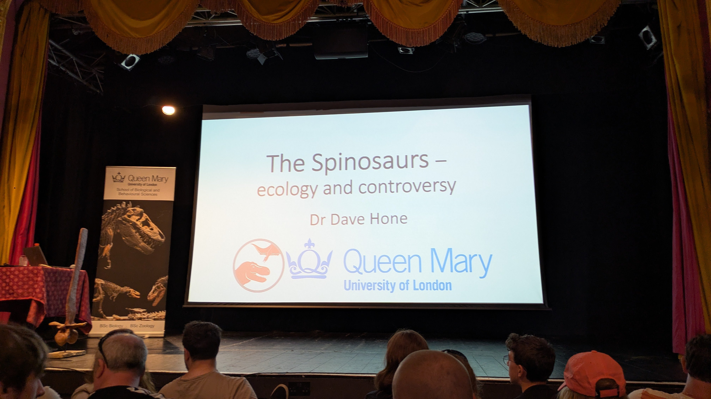
Ήταν η πρώτη μου φορά που παρακολουθούσα ζωντανά ομιλία παλαιοντολογικού περιεχομένου, και οφείλω να πω πως δεν απογοήτευσε. Αν και αρκετά από όσα ειπώθηκαν τα είχα ξανακούσει, πολλά από αυτά που άκουσα εκεί ήταν νέα για μένα. Και μόνο το ότι ήμουν μέσα σε μια αίθουσα γεμάτη με τόσο κόσμο που έχει το ίδιο «μικρόβιο» ήταν ωραίο αίσθημα!
Κυνήγι θησαυρού στην πόλη
Ως μέρος του φεστιβάλ ο καθένας μπορούσε να λάβει μέρος σε ένα «κυνήγι θησαυρού» μέσα στην πόλη, όπου έπρεπε να τριγυρνάς και να πηγαίνεις σε διάφορα μαγαζιά (ρούχων, αναμνηστικών, παιχνιδιών, φαγητού...) και να βρίσκεις στο καθένα από ένα κρυμμένο γράμμα. Στο τέλος σχηματιζόταν μια λέξη και έπρεπε να την υποβάλεις στο κέντρο πληροφοριών του φεστιβάλ για να μπεις σε μια κλήρωση. Δεν ξέρω τι ακριβώς κληρώνεται, νομίζω είναι δωρεάν αναμνηστικά του φεστιβάλ: καπελάκια, μπλουζάκια και τέτοια. Θα μάθουμε αν κερδίσαμε!
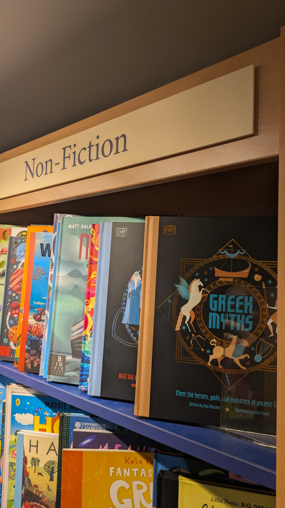
Ομιλία: «Ο απολιθωματοθήρας του Γιορκσάιρ»
Ο Μαρκ Κεμπ (με το εμπορικό όνομα «Ο απολιθωματοθήρας του Γιορκσάιρ», The Yorkshire fossil hunter) είναι ένας πρώην μηχανολόγος που τα παράτησε πριν από καμιά δεκαριά χρόνια για να ασχοληθεί επαγγελματικά με τα απολιθώματα, που ήταν το πάθος του. Μίλησε για το πώς ξεκίνησε να ασχολείται χωρίς να έχει επαγγελματική κατάρτιση ως παλαιοντολόγος ή γεωλόγος, με το να συλλέγει, να καθαρίζει και να συντηρεί απολιθώματα της περιοχής του, στην ακτή του Χόλντερνες στο Γιορκσάιρ. Αφού άρχισε να ασχολείται επαγγελματικά με αυτά, άρχισε να παίρνει και κόσμο σε ξεναγήσεις για απολιθώματα και στο εργαστήριό του, μικρούς και μεγάλους, σχολεία και φοιτητές. Ήταν μια ενδιαφέρουσα οπτική για το πώς ένας άνθρωπος κατάφερε να κάνει την αγάπη του επάγγελμα και τρόπο ζωής.
Τέλος της ημέρας και επιστροφή
Μετά από αυτό φάγαμε κάτι σάντουιτς στο The Bagel Shop (ήταν πολύ νόστιμα αλλά λίγο μικρά) και χαζέψαμε ακόμα λίγο στην πόλη. Αγόρασα και μια μπλούζα του φεστιβάλ για να το θυμάμαι. Υπήρχαν διάφορα πραγματάκια που μου τράβηξαν το ενδιαφέρον, μεταξύ αυτών:
- Ένα ρομποτάκι (μου φαίνεται πως είναι σαν εκείνα τα ρομπότ-σκύλους της Μπόστον Ντάιναμικς) ντυμένο σαν αγκυλόσαυρος κυκλοφορούσε και επιδεικνυόταν στους επισκέπτες.
- Ένα «επιτραπέζιο παιχνίδι» του «πώς να γίνεις απολίθωμα: το πιο δύσκολο παιχνίδι». Ξεκινούσες με ένα ζώο (υπήρχε ψάρι, καβούρι και σκουληκάκι) κι έριχνες ζάρι. Υπήρχαν πάρα πολλά εμπόδια στον δρόμο (π.χ. σε έφαγε ένα άλλο ζώο) και τις πιο πολλές βολές έχανες. Μας είπε ο τύπος εκεί πως μόνο ένα άτομο έφτασε μέχρι το απολίθωμα σε όλο το φεστιβάλ, και πως η πιθανότητα να απολιθωθεί κάτι είναι μικρότερη από 0,001%.
- Αγόρασα ένα «εναρκτήριο κουτί καθαρισμού απολιθωμάτων» (fossil preparation starter kit) για 50 λίρες από τους ZOIC. Είναι μια πένα χάραξης ηλεκτρική (Dremel 290) με δικές τους μύτες πιο ψιλές που είναι καταλληλότερες για τον καθαρισμό απολιθωμάτων. Θα δούμε τι δουλειά θα καταφέρουμε με αυτό.
- Γύρω στις τέσσερις άρχισε να παίζει η μπάντα της πόλης στην πλατεία δίπλα στη θάλασσα. Ήταν ένας ωραίος τρόπος να κλείσει η μέρα.
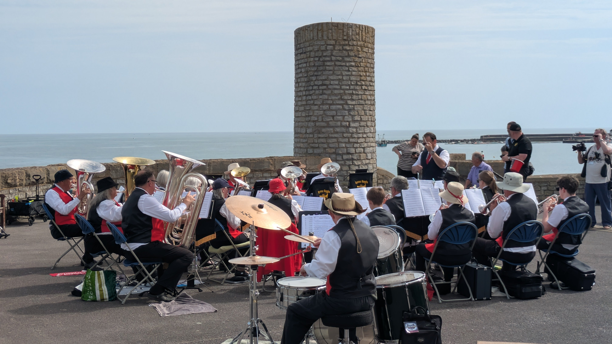
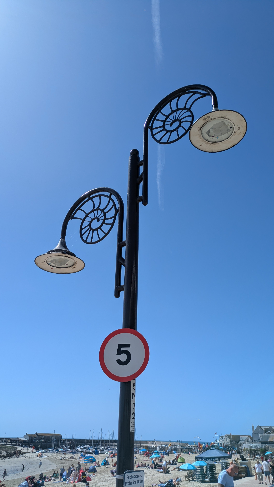
Τέλος, γύρω στις πέντε πήραμε το τελευταίο λεωφορείο για να πάμε στον σταθμό του Άξμινστερ. Ήταν ένα όμορφο Σαββατοκύριακο στη γραφική κωμόπολη του Λάιμ Ρέγκις. Στα λόγια κάποιου άλλου που άκουσα να λέει, ήταν σαν τη Ντίσνεϊλαντ των απολιθωμάτων!
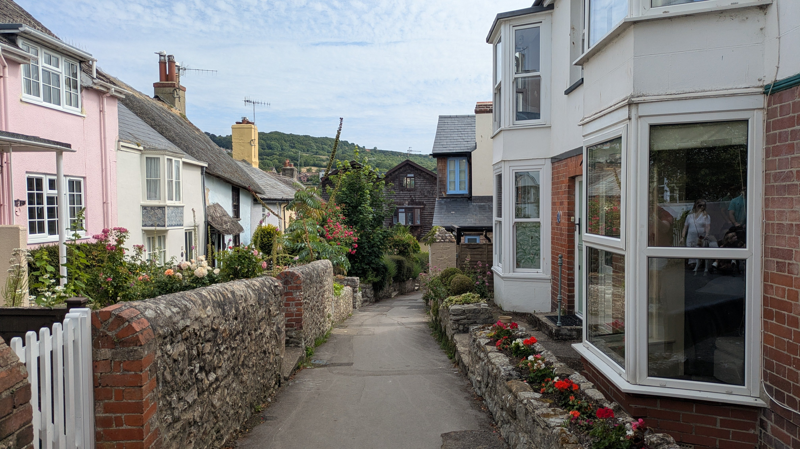